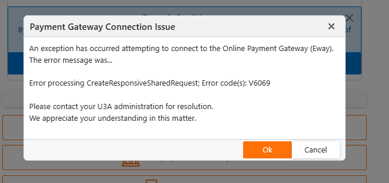

|
<< Click to Display Table of Contents >> Navigation: »No topics above this level« Version History 2023 |
1.Added the ability to set/reset the participant's Financial Year. Please refer to Add/Edit Receipts for details.
1.Upgraded DevExpress components from version 23.1.6 to 23.2.3. The interesting changes thus far are...
a.The grid toolbar now has an Auto Fit button which will resize grid columns to fit the column's contents when clicked.
b.The filter drop down for a Date column now presents a treelist of all dates within the column. This allows selection of multiple dates and date ranges.
c.The grids in Add/Edit Receipts, Add/Edit Fees and Financial Status Enquiry have totals without the generic Count and Sum titles.
1.The text Waitlisted: (Awaiting Random Allocation) will continue to be displayed until random allocation emails have been sent irrespective of the actual status of the enrolment.
1.Email notification to members is now delayed until 3 days after the random allocation day.
1. The membership officer will receive reminder emails 5 days prior the random allocation day and each day until email notifications are sent to members.
1.You can now import holidays for 2024.
1.On non-mobile devices, there is now the option to display the course list in Detail, Summary or Brief format.
a.Detail provides full course/class detail.
b.Summary displays the course name and description with the class details (leader, location and time).
c.Brief displays a one line description. It is akin to an index.
2.Web links now opened in new browser tab rather than popup window to avoid CORS issues.
1.A number of issues in calculating the term for once only and out of term classes have been corrected.
2.A class can now be assigned a Unscheduled (Varies) occurrence type. A class with this occurrence type will allow enrolment the same as any other but...
a.It does not display on the Course Schedule, and
b.You cannot record attendance for it.
1.Revised processing logic for a course with Same Participants in all classes and with multiple classes. The course is only displayed in the enrolment once but each class is displayed in the Class Details section. This prevents a participant from enrolling in the same course multiple times by clicking on different classes.
1.Similar to the above, a course with Same Participants in all classes and with multiple classes is only printed once.
1.Corrected an issue when cancelling a Detailed course with more than 5 class records.
2.A Preview Enrolment List button has been included. When clicked, the enrolment list as seen by members when requesting enrolments via the Member Portal will be displayed.
1.Issues editing class details in Simplified / Activity form have been corrected.
2.A new field, Additional Information URL has been added. This allows you to enter a web page address that contains additional detail about the course.
1.Report now includes a Table of Contents. The Table of Contents is interactive meaning each entry is a link that when clicked will navigate to the course description. To navigate back to the start of the document, use CTRL-Home.
2.Courses details now have an Additional Information link if available. This link is also interactive.
1.Courses details now display an Additional Information button if available.
1.Display a lockout message if up to 12 hours prior to new year enrolment start. Prevent both new user registrations & member logins.
2.Display a lockout message if the current date is not within an enrolment period. Prevent new user registrations in this period.
1.Display an informational message if the current date is not within an enrolment period.
1.Include a Help button on the email address field to explain how to change the email address via the Manage Credentials menu option.
1.A unique Workstation ID is now assigned to the Online Payment Status record. It is used to ensure payment requests created via the Admin Portal are only completed by the workstation that initiated the request, thus avoiding spurious D4406 response messages.
2.The test to deny access to online payments if not executing within the U3A Desktop application is now performed when clicking the Pay By Secure Online Payment button rather than Your Membership Fees button. This allows an administrative login to examine the details of fees owing while still denying access to online payment in an insecure environment.
1.The receipt date of an Eway cash receipt is now recorded as local time rather than UTC. Receipts created as the result of a bank import continue to be recorded as the date on the import file.
1.Help document written
1.Significantly reduced to code path taken when the software returns from processing an Online Payment. The software now returns to the Admin Portal front page rather than traversing the front page, through to the Member Portal and then the Member Payment page. To review a payment made, simply look at the receipt summary grid.
2.The receipt summary grid is now displayed in descending date/time order so that the latest receipt is displayed at the top.
3.Additional columns have been added to the receipt summary, being time of creation and the new Financial To year.
1.This is a new module found on the Fees & Receipting sub-menu within Participation. The purpose of this module is to be able to review EWAY status & error codes without the need to access the EWAY webiste. A payment request with a status code of "00" represents a successful payment. Any other code is an error. Result messages are also coded. To find the meaning of the message search Google for "eway xxxx" where xxxx is the message code. For example, "eway D6604" will return the error...
The customer’s card issuer has declined the transaction as there is a problem with the card number. The customer should contact their card issuer and/or use an alternate card.
1.Local rather than UTC time is now used to calculate the leaders list.
1.The audit trail is now retained in the event of a declined online transaction.
2.An attempt to pay fees via EWAY when the member does not have an email address recorded no longer causes an error. Rather the payment is accepted and a postal Cash Receipt is generated for processing overnight.
3.The member's address and phone number has been removed from the EWAY transaction to reduce the possibly of spurious V**** error codes.
1.Corrected an issue that caused multiple logins to be created when Populate Logins was executed multiple times.
1.Avoid error if user double clicks the Save button rather than single click.
1.Corrected O/sys compatibility issue that caused mailing labels to fail on the Linux server.
1.Corrected graph start date from end of month to start of month.
2.Include financial members in next year as well as the current.
1.Corrected an issue that caused a participant's Financial To to be set to 4047.
1.Date and time entered is now persistent.
1. Reset member financial to year to the previous financial to year when process of a refund results in total fees paid being less than the current membership fee plus postal fee, if applicable.
1. Reinstated English AU spelling dictionaries.
1.Microsoft .Net 8 upgrade. This upgrade keeps our software in step with the latest Microsoft technologies. It contains no user interface changes.
1.An issue that prevented a member's Financial To year from being displayed correctly after fee payment has been corrected.
1.The confirmation report emailed to members now reports course fees, if applicable.
1.An issue that caused the Course grid display to flash when the Classes detail grid was activated has been corrected.
1.Participant maintenance grid now includes members not financial.
2.The receipts grid no longer wraps text in row cells. Cell width has also been adjusted.
1. The addition of the new course views has resulted in large numbers of courses being reported as modified simply because a view has been changed. The reporting of modified courses to the membership officer has therefore been temporarily been suspended until this is corrected..
1.Reinstated Refresh button due to popular demand.
1.Corrected an issue that prevented the selected linked member being displayed on the portal badge.
2.Corrected an issue that caused multiple members without email addresses to be linked.
3.Corrected an issue that incorrectly set the member's join date to the receipt date on payment of fees. A member's join date is now reset if the member's previous financial to year is greater than the new financial to year by more than one year on payment of fees. For example,
•Member financial in 2023, pays in 2024 then join date is unchanged.
•Member financial in 2022, pays in 2024 then join date is reset.
1.Add/Edit Courses now has three course views selectable via tab buttons at the top of the edit form. The available views are; Simple, Activity and Detail. for a full discussion on this topic please refer to Add/Edit Courses.
2.When creating a new course, a pop-up message will be displayed requesting the view to display the new record.
1. The leader's report pack is now sent to leaders 2 days prior to the start of their course. For most leaders this will not cause any change as their courses start at the beginning of term. The change is intended for leaders with courses that have a start date during or after the term break.
1.The Eway payments system will reject payments with email addresses containing spaces at the beginning or end of the address. All email addresses are now trimmed of leading & trailing spaces prior to being forwarded to Eway.
2.Any error occurring from forwarding payment details to Eway will now result in a message similar to the following...

To ascertain the error description, go to eWAY Validation Response Codes - V6058 to V6102. Alternatively, Google "Eway <ErrorCode>". For example, Eway V6069.
All errors indicate an issue with the data presented to Eway and can be corrected by editing the member record. For example, V6069 is an invalid customer (member) email address. Correct as necessary and redo the online payment.
1.You may now enter additional email addresses to receive system warnings & other information generated overnight. Enter the addresses as one per line into the field, System Postman CC email.
2.Bank Details have now been split into their own group.
1.The email will not list all email suppressions for the last 7 days.
1.The Refresh button has been removed from the member selection editor. It's functionality has been incorporated into the Clear button. That is, clicking the Clear button will now refresh the receipt data and clear the member selection editor.
1.Performance improvement transitioning from an EWAY online payment back to the Member Portal, reducing the possibility of double-clicking the Finalise Transaction button.
2.On return from the EWAY online payment, the Member Portal will display a wait spinner while the receipt creation procedure is processed as a background task.
1.An issue that could cause a double payment to occur if the Eway Finalise Transaction button was double-clicked has been corrected.
1.Course fees are now displayed on the class selection schedule, if applicable.
1.Course Fees are now displayed on the report, if applicable.
1.You can now search email for a given date range.
1.The Offered In field now includes the year of offer as well as the terms.
2.The Offered In field now includes the year of offer as well as the terms.
Including the year as well as terms in the Offered In field is quite redundant. However, it helps to emphasise exactly what the member is enrolling in.
1.The grid toolbar now contains a Master/Detail button where you can select to show/hide all Class detail rows.
1.The Term selection is now restricted to those terms in the current membership year only.
1.The default term displayed is now the current term in which the current system date falls. If this is null then the current enrolment term is used.
1.The enrolment selection page now contains a Save button. This allows a quick save, bypassing the selection review.
2.The software now differentiates between a Full class and a Closed class. A Closed class is one in which the Auto Enrol? field is unchecked in Add/Edit Courses.
1.The system message box will now display a scroll bar if the message height exceeds 75% of the viewable height. Currently, this will only occur when 20+ enrolments are added/removed from a member.
1.The Class Schedule report now has a QR (Quick Response) Code assigned to each class. Mouse-click the code in Print Preview to quickly enrol in that class. Scan the code in Print Preview or a printed report to also enrol in the class. A member will still need to log into the system but once a class is scanned/clicked they will be redirected to the Change Your Course Enrolments menu option and prompted to enrol in the selected class.
1.You can now copy a class link which when activated enrols you directly in that class. This change is intended to assist activities officers in advertising special events to members.
1.An issue that caused a maximum of 10 enrolments to be displayed has been corrected. There is now no limit to the number that can be displayed.
1.Performance improvement. The software no longer calculates fees due when the Fees Due column is not displayed. The Fees Due column is only displayed when the selected course has either a fee per term or a fee per year.
1.If the bank description resolves to two or more participant records, a message to that affect is now displayed. Previously, the first participant in the list was selected.
2.The action button area now has a Hide/Show button. If hide is selected, the header area (file upload and action buttons) will be hidden from display and the grid expanded in height to fill the screen. Click the button again to re-display these items.
1.Performance improvements when parsing file data.
2.We now recognise a participant by...
a.Last name and first name in either order,
b.Last and first initial in either order, and
c.Last name only.
3.Camel case text is now correctly tokenised. Thus, FredSmith becomes two tokens, Fred and Smith.
4.We now require the receipt to match either the participant's total fees owing or an individual course/membership fee.
5.Where a participant is found but the fee does not match a warning is displayed.
6.A help page has been added.
1.Corrected an issue that prevented a leader/clerk viewing the leaders sub-menu in the Member Portal when their course is in a future term.
1.An issues that caused program failure when switching between terms has been corrected.
1.An issues that caused program failure when switching between terms has been corrected.
1.Classes held on an inter-term date are now labelled and highlighted as being in the previous term.
2.The software now correctly accounts for a course with classes that extend into the inter-term period and is also to be held in the following term. This will occur when the number of class recurrences is greater than the number of weeks in a term. In this case the course will be listed twice, firstly for the classes held in the inter-term period and secondly for the classes to be held in the new term.
3.As a result of the above changes, a member can clearly view the course / term they are enrolling into. In the given scenario, they will no longer be automatically enrolled into the new term but rather the term they select.
1.The fee calculation now uses the current enrolment term rather than the current term dates to calculate the fees due for a new joining member.
1.The Course By Leaders report now includes the option to print by course clerk rather than leader.
1.The reports menu column now displays the Home page when clicked. This allows a different report to be selected when a report is currently displayed.
1.Leaders with courses within the current year but in future terms are no longer denied access to the My leadership role menu item.
1.A new report, Attendance Summary provides a one page attendance snapshot for any selected year.
1.The student enrolment email no longer prints the leader's contact phone/email if the leader has set their contact details silent.
1.An issue that caused previous term enrolments to be deleted when a new enrolment was added has been corrected.
1.DevExpress components have been updated to version 23.1.5. There are no UI changes.
2.There is a new attendance report, Attendance By Participant Report. It can be printed for one or more members, a given date range and attendance status of Present, Absent with apology or Absent without apology.
3.All reports now display a loading indicator panel on startup to let you know something's happening.
(the page that is displayed on the link from your website)
1.The incorrect alignment of the Register button for new members has been corrected. This issue manifested itself on medium to large resolution devices only.
2.The default theme has been changed to Office White to match all other site pages.
3.Your can now change the theme to more accurately reflect your website's colours. This is done via a query string in the web address. Currently there are four...
a.https://<YourU3AName>.u3admin.org.au?theme=office-white .This is the default theme
b.https://<YourU3AName>.u3admin.org.au?theme=blazing-berry .This is how the landing page used to look.
c.https://<YourU3AName>.u3admin.org.au?theme=blazing-dark .A dark background theme
d.https://<YourU3AName>.u3admin.org.au?theme=purple .A half-hearted attempt to mimic an Apple application.
Hopefully in future there will be improvements to the range of themes.
1.The Remember Me? checkbox has been returned to its original position. It had been removed while reported issues with it were investigated. That investigation is now complete and all is well.
1.Added new menu option, Tell A Fried. This provides a link to the U3Admin public website, https://u3admin.org.au.
Administration website home page
1.The new U3Admin public portal, https://u3admin.org.au link has been moved to the right in the tab sequence.
Administration website home page
2.The first tab on the Home page now displays the new U3Admin public portal, https://u3admin.org.au. This is temporary and intended to generate a little traffic to the new site to improve it's SEO. Any comments about the new site would be appreciated.
1.You may now select the courses you wish to print on the analysis report.
1.A new procedure located on the Course menu column. This function will place the Member Portal into Maintenance Mode meaning members will be unable to access its functionality. To resume normal operation, re-enter this procedure and exit Maintenance Mode.
1.The version button is now sticky, meaning it is always positioned in the bottom right-hand corner of the screen no matter the scroll position.
1.The software will now disallow exit from the procedure if multiple terms have been created but no default term has been set. The software requires a default or current term at all times.
1.Performance improvements. All reports within the Course, Class & Schedule sub-menu now display up to 3 times faster than before. There is still some delay after clicking the Submit button but much less than before.
1.The Silent? column on the participant grid now displays an abbreviated form of the silent contact request, being No, Email, Phone or Both.
1.The Send Reports To column on the course grid now displays in abbreviated form, being Leader, Clerk or Leader & Clerk. If this value is undefined on the course record, the default value from Organistaion Details is now displayed.
2.The Contact Order column on the course grid now displays in abbreviated form, being Leader, Clerk or Clerk, Leader. If this value is undefined on the course record, the default value from Organistaion Details is now displayed.
1.If available, the Terms & Conditions button is now displayed on the Member Portal's Public landing page.
1. Linux operating system migration
1. The version help page and the help manual accessed from the main menu now display in a popup window rather than a new browser tab. The display of help is now consistent no matter how it is accessed.
1.Corrected "Out of Memory" error in Leader's Attendance List.
1.Improved layout on Apple devices.
1.Search text box re-styled to improve lost focus issues.
1.All leader reports now honour a student's silent phone number & SMS Opt Out requests.
1.A new report, Attendance Analysis has been added. It provides a graphical analysis of attendance data for the current year to date. The report may be accessed from...
a.Administrative portal | Reports | Attendance Reports | Attendance Analysis. This is a large report consisting of one page per course. It currently has no filtering so the entire report is displayed. You can select the pages you wish to print after the Print button is clicked.
b. Administrative portal | Portal (Admin) | Leader Report. A single page report for the selected course may be displayed/printed here.
c.Administrative portal | Correspondence Hub | Queue Leader Report. A single page report for the selected course may be queued for overnight email here.
d.Member Portal | My Leadership role | Leader Reports. A single page report for the selected course may be queued for overnight email here.
The graph depicts the present, absent with apology & absent without apology percentages for the course as bar graphs. Three line graphs are also displayed for comparison purposes...
1.All U3A: Present. The present percentage for the U3A group as a whole.
2.All <Course Type> Present. The present percentage for the Course Type as a whole, and
3.Course Regression: The regression line for the course's present percentage.
If a course's present percentage is above the All U3A or All <Course Type> lines it means that course attendance is better than those aggregates. Below the line means it has faired worse than the aggregates.
A rising regression indicates that attendance is improving over time while a falling line indicates it is doing worse.
1.Performance improvements, most noticeably when scrolling through the class schedule list.
1.An issue that caused an incorrect display of course/class selections when the course participation type = different participants in each class has been corrected.
1.Leader. The leader is now printed as either the Guest Leader or the first leader from the list of three defined in Add/Edit Courses.
2.Contacts. All leaders & clerks who have not requested their contact details be hidden will be listed as a contact on the non-public version of the report. They will also be identified as a leader or clerk.
3.Improved Privacy.
a.The leader may optionally be displayed on the public version of the report (see Organisational Details below).
b.A contact's email address will not be printed if they have requested it be silent.
c.A contact's phone numbers will not be printed if they have requested it be silent.
d.The contact will not be printed if both the email address & phone numbers are silent.
e.if the contact's phone number is not silent but they have opted out of SMS, the mobile number will be displayed with (No SMS) appended.
1.The class schedule display has the same enhancements as the Class Schedule report described above.
1.The student enrolments display has the same enhancements as the Class Schedule report described above.
2.If the course has multiple contacts (leader & clerks) only one will be displayed at a time as determined by the Course Contact Order (see below). A button titled Next will also be displayed which, when clicked will cycle the next contact.
3.if the contact's phone number is not silent but they have opted out of SMS, the mobile number will be displayed with (No SMS) appended. Also, the SMS button will not be displayed.
1.A new field, Silent Contacts has been added to Add/Edit Participants. This field replaces the Silent Numbers field. You may select Email, Phone, Both or accept the default of None. Be aware of the special rules regarding email...
a.Leaders. A silent email address will not be visible to students.
b.Student. A silent email address remains visible to the leaders & clerks for enrolled courses.
1.The Communication module now honours the participant's SMS-OptOut selection. If ticked, the participant will not receive broadcast SMS.
1.A new field, Send Leader Reports To has been added to Organistaion Details. It allows you to define the person(s) who will receive leader reports by overnight email. The options are...
a.Leaders, if none then clerks. The reports will be sent to the class leader(s). If there are no class leaders, the reports will be sent to the class clerk(s).
b.Clerks, if none the. leaders. The reports will be sent to the class clerk(s). If there are no class clerks, the reports will be sent to the class leader(s).
c.Both leaders & Clerks. The reports are sent to both leaders and clerks.
2.A new field, Course Contact Order has been introduced to Organistaion Details. It allows you to define the default order in which course contacts will be displayed. The options are...
a.Leaders then Clerks,
b.Clerks then then leaders.
3.A new field, Print leader on public Class Schedule? has been added to Organistaion Details. Tick the checkbox if you want the leader's name printed on the public version of the Class Schedule.
The Course data entry from is now split into tabs, Course Details and Settings. The new fields below can be found on the Settings tab.
1.A new field, Send Leader Reports To has been introduced to Add/Edit Courses. This allows you to override to whom overnight Leader Report emails are addressed for a given course. It overrides the value of the Send Leader Reports To field in Organisational Details. The options are...
a.Leaders, if none then clerks. Contact details for leaders will be displayed. If there are no leaders, then the contact details for clerks (if any) will be displayed.
b.Clerks, if none then leaders. Contact details for clerks will be displayed. If there are no clerks, then the contact details for leaders (if any) will be displayed.
c.Both leaders & clerks. Contact details for both leaders and clerks will be displayed.
2.A new field, Course Contact Order has been introduced to Add/Edit Courses. It allows you to override the default order in which course contacts will be displayed for individual courses. The options are...
a.Leaders then Clerks,
b.Clerks then then leaders.
1.Leader Reports has been renamed Queue Leader Reports and is now located in the Correspondence Hub as it is a more logical home for it. It has been removed from the Reports Menu.
2.The reports are emailed to course contacts (leaders and/or clerks) as described above rather than just leaders. If the contact has a silent email address they will not receive the reports.
1.There is now a new tab titled, Leader Report. It allows a selected leader report for a course to be printed. To software allows one report to be printed at a time to conserve server resources.
1.Member's address removed from Leader's Class List as it is considered a privacy issue.
1.Introduced guard code to prevent attempt to save a record twice if a Save button is double-clicked.
2.Corrected a performance issue in startup of Add/Edit Enrolment Terms.
1.Versioning introduced.
2.A new field, Disable Overnight Background Processing has been introduced. When checked, this option disables all email generated automatically overnight. The option is intended to be used when a group's database is operational but the group is yet to go live.
3.A new field, Send Leader Reports to has been introduced. Allows you to define to whom overnight Leader Report emails are addressed. The options are...
a. Leaders then clerks. (default) The system will attempt to send email to leaders. If there are no leaders with an email address, the reports will be emailed to clerks.
b.Clerks then leaders. The system will attempt to send email to clerks. If there are no clerks with an email address, the reports will be emailed to leaders.
c.Both. The report will be sent to both leaders and clerks.
4.There has been a significant rework of the screen layout to accommodate the recently added options.
5.Convert UTC date & times to local.
6.Bank Data Import. Convert UTC date & times to local.